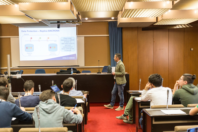

ALTERNANZA SCUOLA-LAVORO
VISITA CED INTESA SANPAOLO
 On March 28th our school class went to Intesa Sanpaolo in Parma. We received a warm welcome by the staff of the bank and then we moved to the conference room where we were told the story of Intesa Sanpaolo. The Intesa Sanpaolo group was born after the fusion of Sanpaolo IMI and Banca Intesa and it is the biggest bank group in Italy and one the most important in Europe, with 11,1 millions of customers. Thanks to its strategic position it is one of the main bank groups in the markets of Centre-Eastern Europe, Middle East and Northern Africa.
 Their activities are divided into business units. Without technology Intesa Sanpaolo probably could not exist, indeed their headquarters rely on more than 400000 technological devices (computers, ATM, etc.). After the explanation of the history and the mode of operation of the bank, they made us have a tour of the huge structure and we visited the control room of data: an enormous room in which millions of data are collected every second. On the underlying floor, instead, some people were verifying that everything was working correctly.
Their activities are divided into business units. Without technology Intesa Sanpaolo probably could not exist, indeed their headquarters rely on more than 400000 technological devices (computers, ATM, etc.). After the explanation of the history and the mode of operation of the bank, they made us have a tour of the huge structure and we visited the control room of data: an enormous room in which millions of data are collected every second. On the underlying floor, instead, some people were verifying that everything was working correctly.